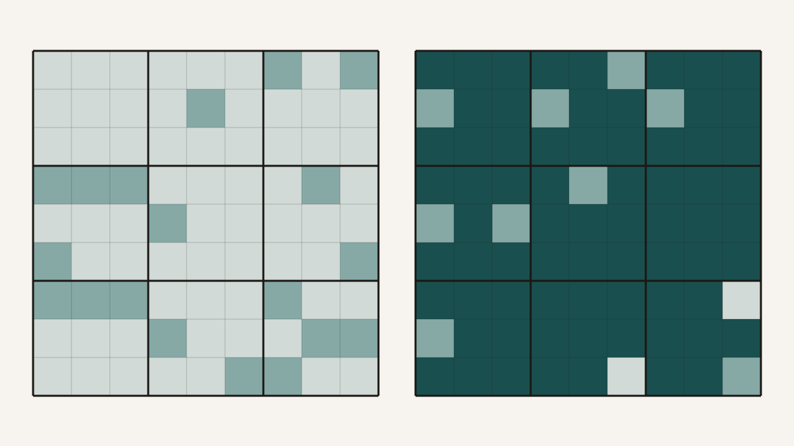

Can a Single Number Tell You How Hard a Sudoku Is?
A solved Sudoku carries no uncertainty at all. Every cell holds exactly one digit, forced there by the others, and there is nothing left to be unsure about. An empty grid is the opposite: every cell could be almost anything, and the puzzle is nothing but uncertainty waiting to be spent. Somewhere between those two states is the entire experience of solving one — and it occurred to me, watching a student I was working with replay their own solve move by move, that the whole thing could be written as a single number falling toward zero.
The number is the grid's Shannon entropy. For a cell with k still-plausible digits, treating each as equally likely, the uncertainty is log2 k bits; summing across all eighty-one cells gives the entropy of the whole grid, H = Σs log2 |D(s)|, where |D(s)| is the number of candidates still standing in cell s. A cell that already holds one digit contributes log2 1 = 0 and drops out of the sum. A completely blank grid, with all nine digits live in every empty cell, sits near its ceiling of about 257 bits. A finished grid sits at zero. Solving is the act of draining that quantity out of the grid.
What makes Sudoku a clean place to think about this is that the entropy only ever goes down. The puzzle has one solution and a fixed set of constraints, so every legal deduction — human or machine — removes possibilities and never adds them. That is not true of every game. In chess, an opponent can manufacture new threats and drive the uncertainty of a position back up; recent work treats that rising tension as its own kind of entropy. Sudoku has no adversary. It is a monotone descent, and a monotone descent is exactly the sort of thing you can put a ruler against.
So I did, or rather a project I was mentoring did. A constraint-propagation solver of the kind Peter Norvig wrote — the sort that repeatedly assigns a digit when a cell has one candidate left and eliminates it from that cell's twenty peers — was instrumented to log the grid's entropy at every internal step. On the human side, a small application recorded each placement with a timestamp, so a person's solve could be replayed and the grid's entropy recomputed after every move. Two summaries came out of each paired solve. One was the initial gap: how much higher the solver's starting entropy was than the human's. The other was the cumulative area between the two entropy curves once both were rescaled onto the same zero-to-one axis of progress — a measure of how far apart the two ways of solving stayed, integrated over the whole solve.
The geometry is worth making concrete before the numbers arrive.
The two summaries, drawn schematically. The solver's entropy starts high and falls to zero; the human's starts lower and also falls to zero. The vertical distance at the start is the initial gap; the shaded region is the cumulative area. Both shrink as puzzles get harder — which is the result, and also, as it turns out, the trap.
Across twenty-eight solves — ten easy, ten medium, eight hard, graded by the application — both summaries came out strikingly ordered. The initial gap fell from a mean of 144.69 bits on easy puzzles to 127.99 on medium and 79.00 on hard, a one-way analysis of variance giving F(2,25) = 24.78, p < 0.001, and an easy-versus-hard effect size of d = 2.78 — enormous by the usual conventions. The cumulative area told the same story, sliding from 55,829 units on easy puzzles to 21,615 on hard ones, with a comparably large easy-versus-hard d of 2.80. Two different entropy statistics, computed two different ways, both marched monotonically down the difficulty ladder. As a difficulty ruler, entropy worked.
Then the gap misbehaved, and it is worth being honest about how.
The temptation, looking at a 145-bit gap on easy puzzles, is to read it as cognition: the human walks up to the grid, recognises patterns, and has already resolved a hundred-odd bits of uncertainty that the machine still has to grind through. Some of that is surely real. But most of that number is an artefact of when and how the two entropies were measured. The solver logs its first state from the fully unconstrained grid — every empty cell still carrying all nine candidates, before the puzzle's given digits have even been read in — so it starts near the 257-bit ceiling and only afterwards falls as the clues register. The human's starting entropy is computed from the grid as presented, with the givens already in place, and using nothing more than direct elimination of digits a cell's filled neighbours rule out. The two solvers are not being timed from the same starting line, and they are not using the same definition of a candidate. A large part of the gap is the distance between two measurement conventions, not the distance between two minds.
This is the sort of thing that is easy to wave away and shouldn't be, because it changes what the headline number means. The gap does not cleanly measure a human's cognitive head start. What it measures is contaminated by instrumentation in a way that happens to correlate with difficulty. And that is also the reason the difficulty-grading result survives the objection: the cumulative area and the gap both compare the same metric, with the same asymmetry baked in, across the three difficulty bands. Whatever offset the measurement convention introduces, it introduces it everywhere, so the ordering from easy to hard is still doing real work even though the absolute magnitude is not. The finding and the artefact travel together in the same statistic. Separating them is not a matter of collecting more data; it is a matter of noticing that one of the numbers is partly a definition.
What I find more interesting than the gap is the shape of a human solve up close. On a hard puzzle, the entropy did not slide down at a constant rate. It fell in steps: long plateaus where the number barely moved for the better part of a minute, punctuated by sudden drops that cleared several bits in a few seconds. That is what you would expect if a person is not eliminating candidates one at a time but recognising a configuration — a locked pair, a hidden single, a box that can only resolve one way — and collapsing a whole region of uncertainty in a single move. The chunk is the unit of a human solve, and the plateaus are the reader searching for the next chunk. A constraint solver, by contrast, never plateaus; it eliminates continuously because it has no notion of a pattern worth waiting for. Some grids, in fact, the solver clears with no guessing at all — pure forward propagation, never once needing to branch — which is its own small reminder that "hard for a person" and "hard for a machine" are not the same axis.
Entropy, then, is a good ruler and a treacherous yardstick. It grades Sudoku difficulty with effect sizes most psychology studies would envy, and it makes the moment-to-moment texture of a solve — the plateaus, the collapses, the monotone descent — visible in a way that a stopwatch cannot. What it does not do, at least not yet, is cleanly separate how a person resolves uncertainty from how an algorithm does, because the most eye-catching number in the study is measuring the ruler as much as the thing being ruled. That is not a failure of the idea. It is the idea telling you exactly where it needs to be sharpened.
An honest caveat that should go before any stronger claim
The difficulty-grading result is the robust one; the human-versus-machine comparison should be read as descriptive only. The two entropies were computed by different procedures from different starting states, so the size of the gap cannot be taken as a measure of cognitive advantage until both are defined identically. The sample is twenty-eight solves, and if a single person contributed many of them the observations are not independent, which would make the analysis-of-variance p-values optimistic; the honest version of this study reports effect sizes and treats the significance tests as descriptive until the participant count is pinned down and a clustered model is run. The difficulty labels came from the application rather than an external standard, the hard band's variance dwarfs the easy band's, and the entropy definition itself is a deliberate over-estimate — it ignores the logical dependencies between cells, so it counts more uncertainty than a perfect reasoner would actually face. None of that sinks the central claim. It just means the claim is that a single entropy statistic orders difficulty, not that entropy measures the mind.